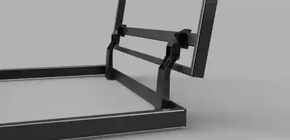
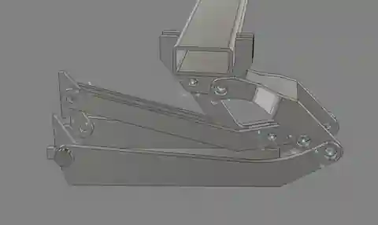
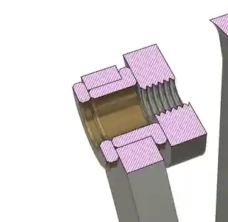

Mechanical design · Linkage synthesis · CAD
A hinge commission turned into a free linkage design tool
I was commissioned to design a concealed linkage hinge for a two-leaf access hatch. The interesting part was not simply making the hatch rotate. It had to follow a particular path through a crowded space, clear the surrounding structure and fold away without obstructing the opening.

The problem: start with the movement, not the pivots
A conventional hinge fixes the axis of rotation. For this hatch, that was too restrictive: each leaf needed to lift and move clear as it opened, while avoiding the floor and the opposite leaf. The closed and required open positions were relatively easy to specify. Finding a compact arrangement of links and pivot centres that connected those poses without unacceptable intermediate motion was the harder problem.

A geometry that connects the end positions is not automatically a usable hinge. Intermediate clearance, link proportions, joint packaging and an achievable assembly matter too.

Why I built a synthesis tool
I looked for a practical way to work backwards from the required movement to the linkage topology, pivot positions and link lengths. The tools and workflows I found were useful for modelling and testing an existing mechanism, but I could not find a suitable, accessible way to prescribe the movement and pivot-placement regions and then search for a mechanism that met them.
So I developed a search-based synthesis workflow for the problem. Starting from the desired open and closed poses and preferred pivot regions, it generates candidate four-bar and six-bar layouts, checks their geometry and simulates the resulting movement. The candidate mechanisms can then be taken into CAD for more detailed interference, load and fabrication assessment.
I used Fusion 360 to develop and inspect the mechanism geometry and Siemens NX to explore assembly motion and prepare for subsequent engineering analysis. The synthesis stage does not replace either package - it provides candidate pivot locations and link lengths to investigate in them.
From a one-off problem to a tool others can try
Once the underlying search worked well enough to explore the hinge design, it seemed a shame to leave it as a project-specific script. I developed a guided browser interface so other designers could experiment without having to write their own solver or learn my original workflow.
Start with a moving panel's width and thickness. Place preferred pivot targets directly on a coordinate drawing, with adjustable search radii. Define the door's open position using a rotation and the translation of its origin. The calculator searches for candidate mechanisms and displays their pivot coordinates, link lengths and simulated movement.
Four-bar calculator
Explore a ground link, two side links and a moving panel for comparatively simple guided hinge movements.
Try the free four-bar tool →Six-bar calculator
Explore a coupled linkage with additional pivots and links available to influence the moving panel's path.
Try the free six-bar tool →These are preliminary planar kinematic calculators, not approved mechanical designs. A viable candidate still needs full-stroke clearance checks, adequate materials and sections, pivot and bearing design, and verification under actual loads.
Need a hinge or another mechanism designed?
The free calculators are intended to make early exploration easier. If you need a mechanism designed for a real installation, I can help with motion specification, linkage development, CAD assembly, mechanical assessment, fabrication drawings and prototyping.
Discuss a design project →The hosted calculators are free to use. The software, interface and original site materials are © 2026 Theodore Nolan-Isles, all rights reserved. Reuse of the tool or its source code requires written permission. Terms.